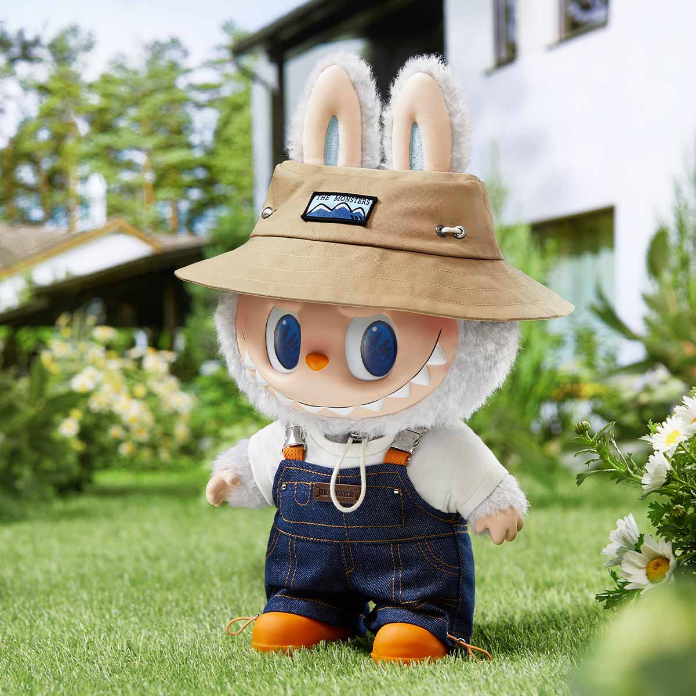
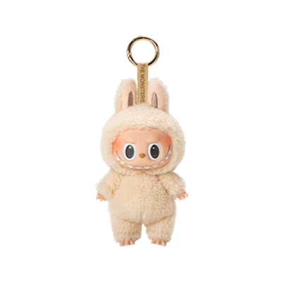
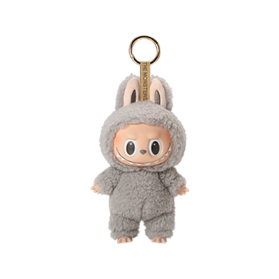
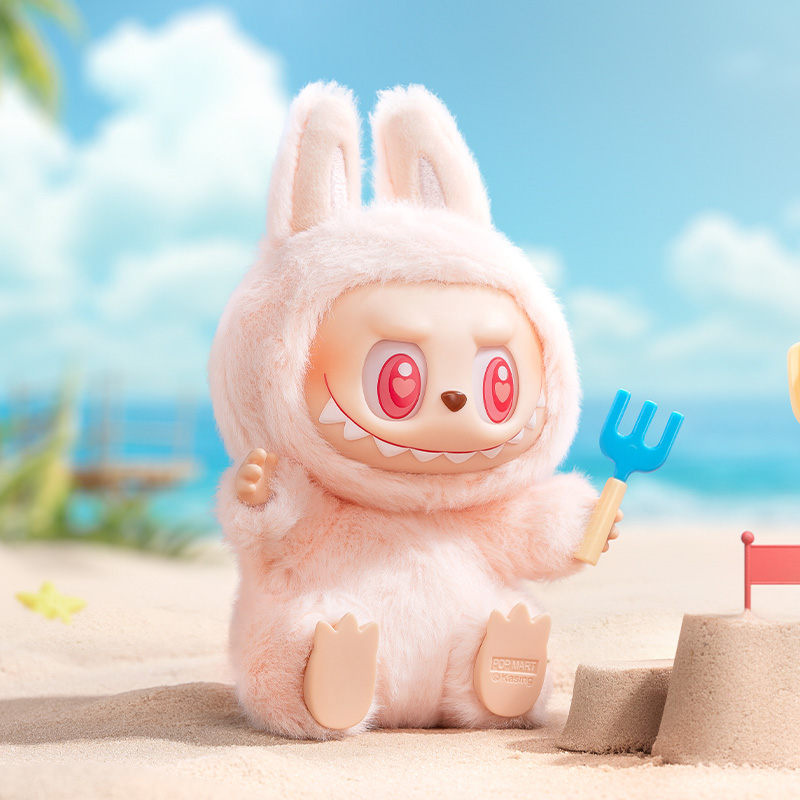
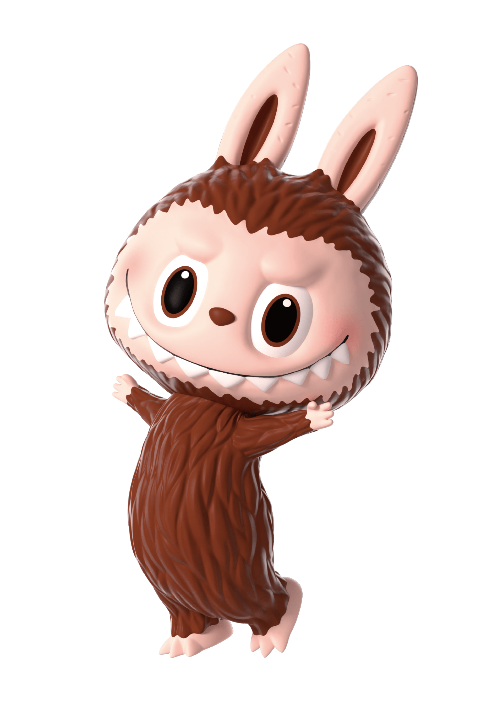
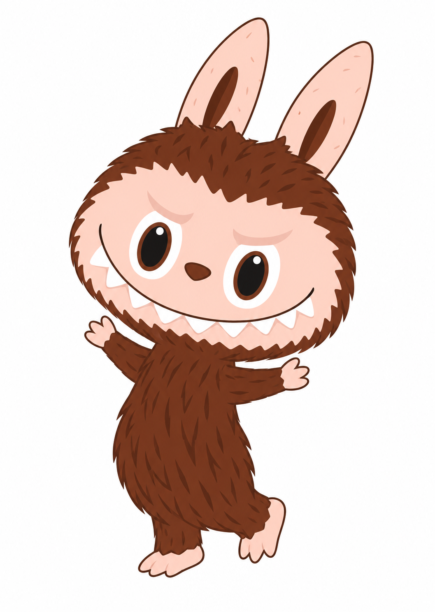
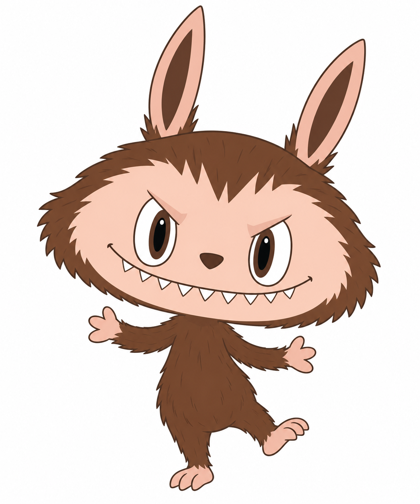
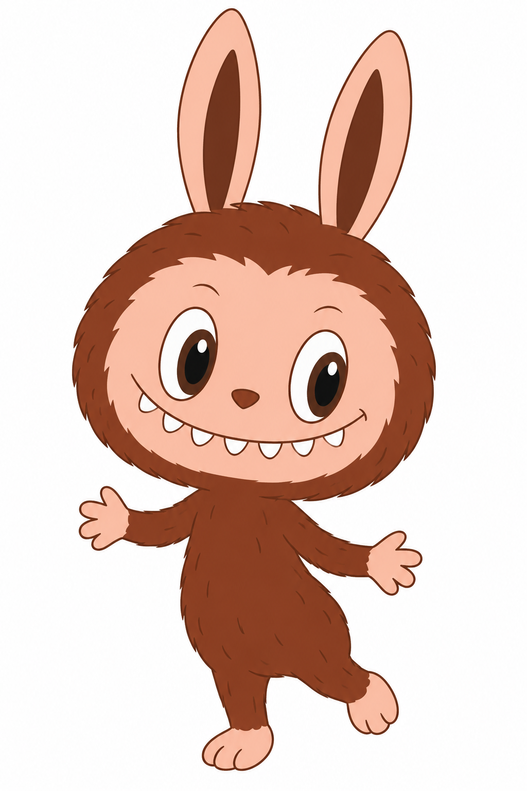
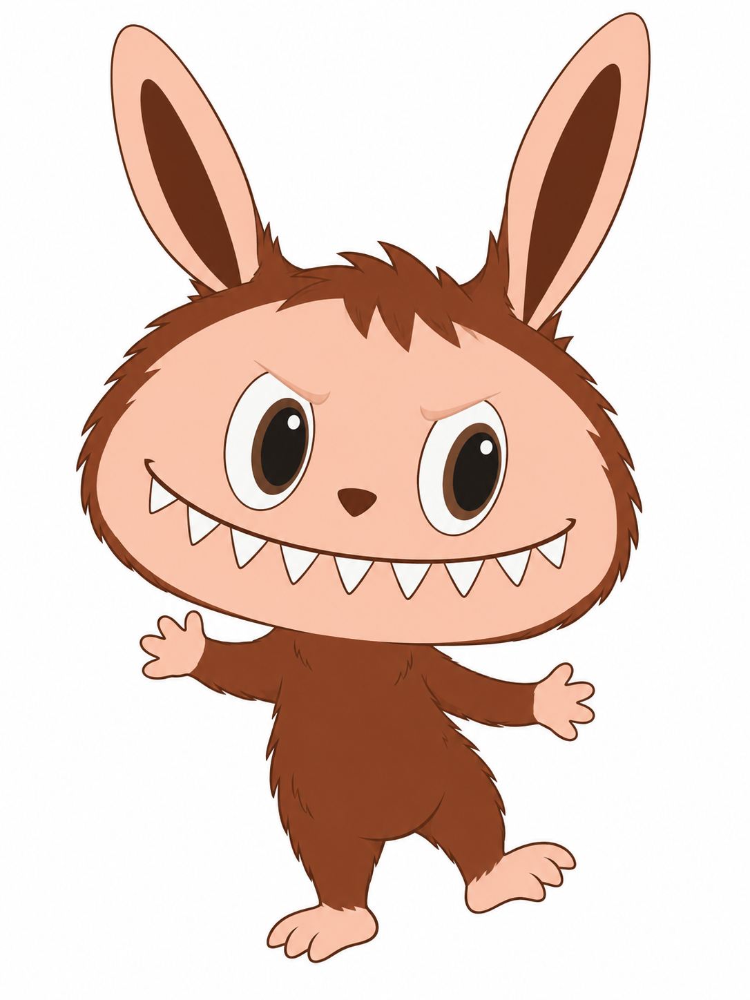

怪物外表，善良内核
LABUBU 的尖耳、九颗牙与顽皮表情形成辨识点。官方设定包含约百名森林精灵，雀斑成员 FRECKLES 与 TYCOCO 的关系也属于世界观的一部分。
一个绘本中的精灵世界，如何变成被带出门的日常陪伴？从造型、商品到传播，拆开事实与解释。
开始阅读 ↓
FALL IN WILD · © POP MART / Kasing LungTHE MONSTERS 是龙家昇（Kasing Lung）创造的精灵世界；LABUBU 是其中最广为人知的族群。公司收入按 THE MONSTERS 统计，不能直接改名为“LABUBU 单角色收入”。
LABUBU 的尖耳、九颗牙与顽皮表情形成辨识点。官方设定包含约百名森林精灵，雀斑成员 FRECKLES 与 TYCOCO 的关系也属于世界观的一部分。
ZIMOMO、TYCOCO、SPOOKY、PATO 等成员共同构成家族。仅凭大个头或商品标题中的关键词，不能把任何玩偶都认定为 LABUBU。
作者提供人物与故事；泡泡玛特推动系列化、渠道和商品运营。媒体资料指向 2019 年独家授权合作；未取得合同，不推断版权全部转让。
官方艺术家简介记载与 HOW2WORK 合作，把绘画转为玩具。早于 THE MONSTERS 世界成形。
2015 年起构建 THE MONSTERS。Tatler 分别记述三部曲发表于 2015、2016、2017 年；官网把三部曲集中放在起源介绍中。出版年份与 IP 起源年份不能混为一谈。
作者访谈说 2016 年在台北玩具展接触泡泡玛特；媒体记述 2019 年独家授权。相识、首次接触与正式合作是不同事件。
搪胶毛绒挂件成为关键载体，随后发展坐姿、服装场景和渐变配色。产品迭代不只改变颜色，也改变携带方式与使用情境。
以下观察直接来自官方商品图片，属于视觉分析；不把商品摄影色差当成品牌标准色。



竖直尖耳、宽嘴尖牙、紧凑的头脸布局，是本次样本最稳定的组合。单个元素并不独占；组合、比例与表情的关系才让角色被认出。毛绒并非世界观身份的必要条件，硬质公仔同属产品线。
颜色、坐站姿、眼神、服饰、手持物与摄影场景可做系列变化。变化仍应保留人物识别；“变色＝新角色”与“大号＝ZIMOMO”都不是可靠判别法。
奶油毛色 · 杏色脸面 · 深色五官 · 牛仔蓝 · 卡其服装。仅为屏幕目测近似，非官方色号，也非面积占比测量。
光滑面部使表情清晰，毛绒身体提供可触摸的柔软感；挂环把展示从家中移动到包袋。这个机制有物理依据，但“因此增加多少购买”尚无因果数据。
| 系列 / 发布日 | 形态与尺寸 | 材料与变化 | 证据 |
|---|---|---|---|
| Exciting Macaron 2023-10-27 | 搪胶脸毛绒挂件 约 6.7 英寸 | 六款常规色与隐藏款；美国页材料栏列 ABS / PVC，未完整说明毛绒成分，不补猜。 | ↗ 来源 |
| Fall in Wild · Doll 2024-04-12 | 服装毛绒娃 约 20 × 15 × 40 cm | 棉、PVC、ABS、聚酯、TPR 等；渔夫帽、牛仔背带裤构建户外情境。与同名挂件是不同 SKU。 | ↗ 来源 |
| Have a Seat 2024-07-12 | 坐姿毛绒 8 × 7 × 15 cm | 外层 60% PVC / 40% 聚酯；填充含聚酯、ABS、铁、尼龙。眼神与坐姿带来差异。 | ↗ 来源 |
| Lazy Yoga 2024-08-09 | 硬质动作公仔 5.2—11.3 cm | ABS / PVC；以动作库扩展表达，不只是换色。 | ↗ 来源 |
| Big into Energy 2025-04-25 | 渐变色毛绒挂件 美国页 17 cm，不含挂环 | 情绪命名与渐变色；英国页另列 15 cm，地区口径冲突尚未解决。 | ↗ 来源 |
这是代表性产品样本，不是全量目录。尺寸按所列地区官网；不能跨地区混用，也不能由页面展示推断实时库存。
原表单位为人民币千元：4,814,017 → 4,454,361；同比由原始值计算。来源：2026 中期业绩公告 p.29（镜像 PDF）。排序衡量收入规模，不等同于审美、人气或投资价值。↗ 原始数据表
大规模商业化已经成立；2026 上半年出现同比下降。分析应同时看收入规模与增速，不能沿用“持续爆发”的旧叙事。
没有单一角色、SKU、渠道或国家的完整分拆；不能把总收入全部归因给 LABUBU 挂件，也无法计算该 SKU 毛利或营销回报。
尖牙和坏笑叠加柔软毛绒，形成可爱与调皮并存的感受。官方图支持这种形式反差；它对购买的独立贡献仍需实验。
作者观察到粉丝带玩偶旅行、去咖啡馆，于是更容易携带的挂件具有意义。公开展示可能促进社交接触；传播增量尚无量化归因。
维持头脸识别，同时扩展颜色、姿态、服装与场景，允许消费者在共同身份下选择偏好。不能把隐藏款机制当作唯一动机。
挂件争夺的是包袋展示位、礼物预算与注意力。把它仅与其他盲盒对比会漏掉毛绒、饰品与其他角色商品。造型被模仿、供给增加、获取体验差和流行迁移，都可能削弱优势；这些是风险假设，不是已证实的衰退原因。
界面报道中的老玩家购买障碍与转售讨论，提示“热度提高”也可能损伤原有购买体验。后续应同时问新用户为什么买、老用户为什么不再买。↗ 来源
先校正研究目标：以官网角色展示图作为固定身份基准，区分基础角色与奶油毛绒商品款。下方为官方图与目前最接近的参考辅助平面结果。


模式：参考图辅助。需上传左侧官方图并使用以下全文；未获得“纯文字通过”结论。
输入图片1是官方角色的身份与姿态参考。把它忠实转绘为二维平面图，保留原图宽脸、眉眼关系、耳形、九齿排列、躯干与四肢位置，不重新设计角色，不混入此前奶油毛绒款的圆软轮廓。只把立体表面和光影转换成平面色块。画一张单角色全身二维平面设定图，纯白背景。对象是一只棕色的森林小精灵，不是兔子或穿动物连体衣的人。关键身份：头非常大，呈横向展开的圆角扇形，上额圆拱，两侧颊部外张，下颌宽而圆，不是正圆；头部宽度约为躯干宽度的1.8倍，不含耳朵的头高约等于颈部到脚底的长度。头顶是两只长而窄的直立尖耳，略向两侧展开，耳外部为浅粉色，内侧是细长深棕色槽形区域；耳朵没有奶油毛绒包边。头外围是深栗棕的短尖束状外轮廓，杏粉色裸露脸面占头部大部分，额头上边界有几撮向下的棕色尖束。脸不是戴面具。额部与眉弓轻微向两眼内侧压低，形成淘气而非甜美呆萌的表情。两眼是竖椭圆形，外圈大块白色眼白、内侧细棕色虹膜环、中间偏长的黑色椭圆瞳孔，各有一粒很小的白反光点；眼距约为单眼宽度，不能画成两个圆黑点或巨型圆眼。鼻子是小的深栗色圆角倒三角。嘴线宽至两侧脸颊，呈向下弯的浅弧，嘴角向上挑；沿弧线的下方排列九颗白色短三角牙，中央一颗，左边四颗、右边四颗，不要画成八颗、双兔门牙或双排牙；不画张开的黑洞大嘴。躯干较瘦，梨形肚子，身体与四肢栗棕色；短臂从肩部向两侧举起，手掌与脚爪是浅粉色，小而有分叉，不能画成人类鞋子。没有脖圈、衣服、挂绳、钥匙环、尾巴或头饰。姿态：整个角色略向画面右侧倾斜，头顶耳朵方向随倾斜，两手张开，一只脚稍抬起。轮廓线清晰，棕色体表用少量方向一致的短线表示短尖束，不画圆形云朵边或羊羔卷毛。全部为封闭轮廓和干净均匀色块，最多一层简洁的局部色块表示眉弓，不画柔焦渐变、立体材质、摄影光影。角色居中且耳尖和脚尖完整，留足空白。没有文字、品牌、装饰、道具和额外角色。
以下各轮没有输入图片。修订必须与当次实际结果对应，不能改词后沿用上一张图宣称成功。

头过扁宽、眉弓过尖，整体更像凶猛卡通精灵。
画一张单角色全身二维平面设定图，纯白背景。对象是一只棕色的森林小精灵，不是兔子或穿动物连体衣的人。关键身份：头非常大，呈横向展开的圆角扇形，上额圆拱，两侧颊部外张，下颌宽而圆，不是正圆；头部宽度约为躯干宽度的1.8倍，不含耳朵的头高约等于颈部到脚底的长度。头顶是两只长而窄的直立尖耳，略向两侧展开，耳外部为浅粉色，内侧是细长深棕色槽形区域；耳朵没有奶油毛绒包边。头外围是深栗棕的短尖束状外轮廓，杏粉色裸露脸面占头部大部分，额头上边界有几撮向下的棕色尖束。脸不是戴面具。额部与眉弓轻微向两眼内侧压低，形成淘气而非甜美呆萌的表情。两眼是竖椭圆形，外圈大块白色眼白、内侧细棕色虹膜环、中间偏长的黑色椭圆瞳孔，各有一粒很小的白反光点；眼距约为单眼宽度，不能画成两个圆黑点或巨型圆眼。鼻子是小的深栗色圆角倒三角。嘴线宽至两侧脸颊，呈向下弯的浅弧，嘴角向上挑；沿弧线的下方排列九颗白色短三角牙，中央一颗，左边四颗、右边四颗，不要画成八颗、双兔门牙或双排牙；不画张开的黑洞大嘴。躯干较瘦，梨形肚子，身体与四肢栗棕色；短臂从肩部向两侧举起，手掌与脚爪是浅粉色，小而有分叉，不能画成人类鞋子。没有脖圈、衣服、挂绳、钥匙环、尾巴或头饰。姿态：整个角色略向画面右侧倾斜，头顶耳朵方向随倾斜，两手张开，一只脚稍抬起。轮廓线清晰，棕色体表用少量方向一致的短线表示短尖束，不画圆形云朵边或羊羔卷毛。全部为封闭轮廓和干净均匀色块，最多一层简洁的局部色块表示眉弓，不画柔焦渐变、立体材质、摄影光影。角色居中且耳尖和脚尖完整，留足空白。没有文字、品牌、装饰、道具和额外角色。

眉眼矫正过度，表情过甜；牙齿变成圆瓣、数量不足。
生成单只棕色森林小精灵的二维平面复现研究图，白底全身，非原创改造。角色总体构型：大而圆宽的头、细长直立耳朵、偏瘦的小身体；角色没有穿衣服，也不是兔子。 比例优先：把不含耳朵的头部宽度设为100个相对单位，头高约82；肩以下至脚底的高度约90，躯干最宽约50。头部是饱满圆角的宽椭圆，额顶圆拱、两颊外鼓、下颌宽而圆；绝不能压扁成左右尖出的狐狸脸或横长扇形。头顶两耳各长约55、宽约18，相隔约22，狭长叶片形，耳尖小而圆钝，耳整体浅粉，内槽细长深棕色，耳根直接接头顶，不画卷毛包边。 面部：裸露的杏桃粉脸面占头部大部分，棕色毛边只围脸一圈。额前毛边用不规则短圆钝小尖束，不画一排长锯齿或前额长刘海。眼睛位于脸的中部，两只完整闭合的竖椭圆白眼圈，眼高约头高的30%，单眼宽约头宽的18%，眼间距约单眼宽；每只眼含棕色细虹膜环、偏长的黑色瞳孔及一个小白亮点。每眼上方是一小段柔和的肤色弧形眉弓，内端稍低，形成顽皮神态；眉弓不覆盖眼白，不用尖锐V字眉，不画愤怒斜三角眼。鼻头很小，是深栗棕的圆钝倒三角。宽笑嘴从左颊延至右颊，嘴角高、中央低，是一条柔和弧线；弧线下是九颗白色短圆钝三角牙：中央一颗，左右各四颗，各颗大小相近并相互留出窄缝。没有黑色嘴洞、舌头和下排牙。 身体：深栗棕色梨形躯干稍长而收肩，短腿和小脚，浅粉的手掌脚趾。两短臂向外张开，手掌有几根短小分叉。身体没有套装边缘、颈圈、按钮、拉链或肚皮色块，无尾巴，无挂环。整个角色含耳朵略向画面右侧倾斜，身体是柔和弯曲而非横着踢腿，左侧脚垂下，右侧脚轻微后抬。 配色：头部围脸毛边、躯干、四肢采用较深偏红的栗棕色，预览#793B26；脸和外耳、手脚为杏桃粉，预览#F3C3B2；耳内#5B2718，白眼圈和牙齿为白色，瞳孔黑色。棕色体表只用稀疏的短弧线提示方向，不加密集尖刺或蓬松卷毛，不让表面纹理改变轮廓。 平面要求：细而清晰的深棕轮廓、均匀平涂、没有立体渲染和摄影阴影。耳尖、手脚完整，角色周围留白。禁止文字、品牌名、装饰、额外角色、道具、三视图、羊羔毛、兔门牙、凶恶眼神和巨大的尖锐眉毛。

九颗牙已恢复，但头形仍偏宽，眉弓偏尖，额前毛束过长；未达到基础身份校准要求。
单个既有角色的平面研究复现，不做原创改造。请画出以下精确形象：一只栗棕色森林精灵，超大头、双长耳、露出九颗尖牙，短而较瘦的栗棕身体，杏桃色大面积脸面，神态调皮，有一点坏笑。 头部不是扁狐狸脸，也不是圆形婴儿脸。它是饱满宽椭圆：宽约100、高约82。头部围脸的栗棕色边缘很薄，只保留短而不规则的毛尖，额前向下有三个至五个小尖束，脸颊左右展开，下巴宽圆。躯干到脚底约85高，最宽约48，腰部略收、腹部稍鼓。两只耳朵狭长、根部窄、尖端圆钝，耳长约48，浅杏粉色外耳包着细长深棕色内耳槽，耳朵不比头还长，也没有毛绒套。 五官必须用固定相对位置：白眼圈是两只完整的竖长椭圆，每眼高约25、宽约17，两个眼圈之间间隔约17。眼内棕色细环包住大颗黑色竖椭圆瞳孔，瞳孔处于眼圈中央略靠内，每眼仅一点小白高光。眼睛顶部上方各有一块低而短的肤色眉弓；眉弓靠鼻梁一端略压低、外侧略抬高，表情是淘气坏笑。眉弓与脸为同色，只用很浅的一块分区线说明形状，不画两条上扬的独立眉毛；不允许画成忧愁眉或极端V字愤怒眉。鼻子是很小的深栗棕圆角倒三角。 大笑嘴沿脸颊从一侧延伸到另一侧，嘴角上扬，中央低，宽约脸宽的88%。只用一条深棕色浅弧，下面是一排九颗明显的三角尖牙，牙尖朝向下方：从左到右是1、2、3、4、中央第5、6、7、8、9颗，数字只供计数，不画数字。九颗牙都完整露出，不互相重叠；每颗都是直边三角形，仅角稍圆，绝不是圆瓣、U形乳牙、兔门牙。中间五颗牙接近水平排列，两端各两颗随上翘嘴角渐升；从左脸侧绕到右脸侧，尖牙和嘴线占据脸下半部。没有张开的黑嘴洞。 两只手臂很短，从肩部两侧略向上展开，手掌小而有四个短指轮廓；浅粉小脚带三个短尖趾，腿短、不画大拖鞋。身体全部栗棕色，无鼻口之外的配件、无衣服、无兜帽、无颈圈、无尾巴。略向画面右侧倾斜、两手张开、右脚轻抬，轮廓不变形。色块：栗棕#793B26，脸耳手脚#F3C3B2，内耳#5B2718，眼白和牙齿为白色。采用二维平涂和少量棕色体表方向线，不要3D、渐变光影、毛绒、羊毛卷边、幼儿贴纸画风、凶恶尖刺、场景、文字、标志。纯白底，单体全身，耳尖和脚尖完整。
| 顺序 | 检查项目 | 当前判断 |
|---|---|---|
| 1 | 整体轮廓、头脸宽高、头身关系、耳形与连接 | 参考辅助较接近；纯文字仍有形变，未放行。 |
| 2 | 眉弓、眼型、眼距、鼻嘴位置及九颗尖牙 | 纯文字第三轮九牙恢复，但眉眼和额前毛束还偏离。 |
| 3 | 颜色关系、区域位置、姿态与平面表达 | 只能在身份通过后作最终确认；不以颜色接近弥补身份偏差。 |
| 4 | 下游材质、产品与原创转译 | 暂停，不将已有试验标为本轮正式完成。 |
THE MONSTERS 的案例价值，是将有辨识度的角色系统，转换为能随身携带、能表达偏好、能不断扩展的商品体系。单靠“丑萌”或“情绪价值”不足以解释全部增长。
已按 Study v0.2 开展平面提示词校准，当前关卡未通过。后续材质与原创转译暂停；官方证据图与AI测试图分开。
现有事实研究保留；平面复现仍在校准。此关卡未通过前不进入后续步骤，也不开展下一个 IP。
检索与观察截止 2026-10-19。官方叙述用于角色设定和产品规格，财报用于经营数据；媒体用于访谈和外部观察；社交笔记只作为有限样本。网页内“分析”不应当作来源原话。
图片来自相应 POP MART 官方产品页面，仅作研究引用；相关角色、图片及商标权利归权利人。本页为独立研究，非品牌官方网站。数据档案保留历史修订；历史未复核数字不作为本页结论。
你提供的笔记：有线索，也有需要拆开的说法
让英国民众大打出手😅LABUBU到底是什么⁉️
品牌备忘录 · 2025-06-02 · 6 张图已查看，正文与部分评论可读。
观察于 2026-10-19：页面显示 1,492 赞 / 649 收藏 / 34 条评论；实际可见 13 个评论条目，未展开全部回复。指标会变化。↗ 原笔记（可能需登录）
角色辨认有门槛
可见评论有人询问两个角色的区别。提示新用户需要家族辨识说明，不能外推“不懂角色的人占比”。
存在送礼传播线索
一条评论自述伴侣因同事谈论而提出送礼。可用于设计后续访谈问题，不等于已验证成交路径。
审美评价并不单一
既有“丑萌、可爱”的喜爱，也有与其他玩偶相似的联想。相似联想不构成侵权判断。
抽样方式：用户指定单帖，存在选择偏差。当前远程浏览器未继承用户登录态；输入“LABUBU 品牌介绍”“LABUBU 产品汇总”并回车后仍停留原帖，未得到搜索结果。因此没有宣称完成全站检索或系统受众抽样。